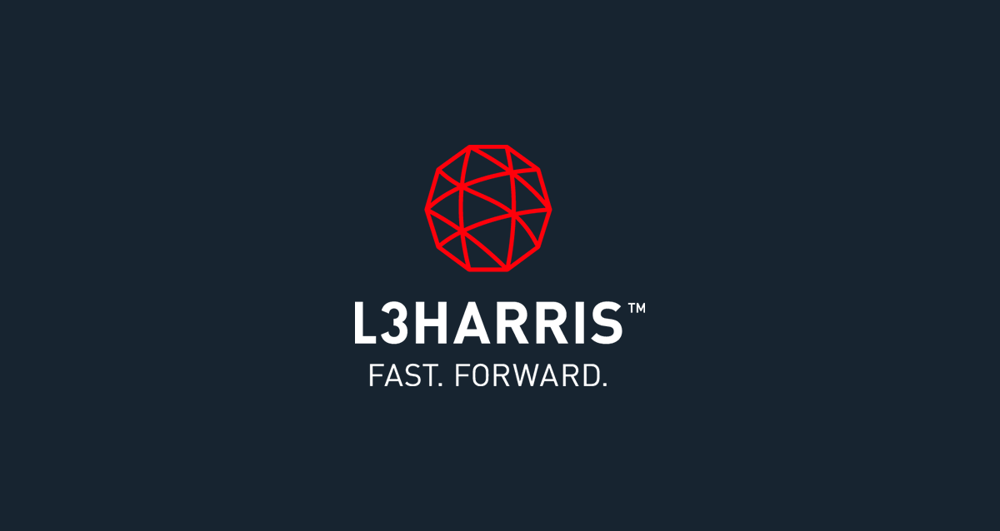
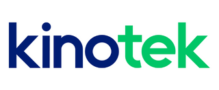
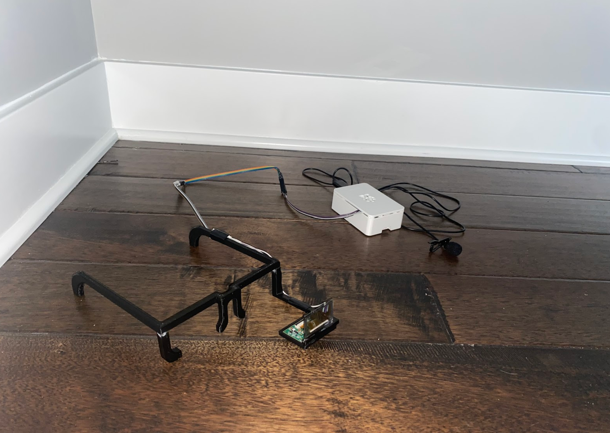
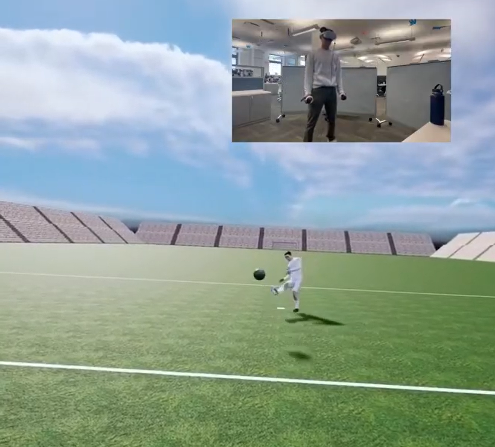
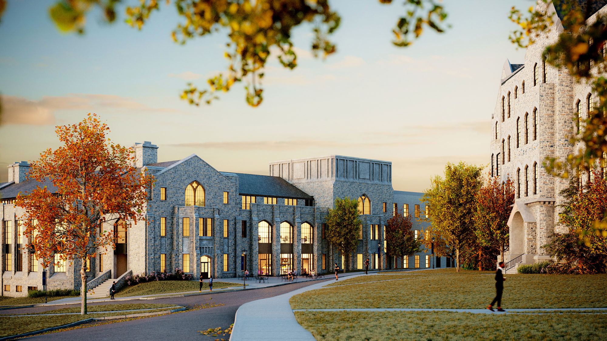

Professional Experience

L3Harris Associate Software Engineer (Remote)
LOADR - Full stack web application development
The current project I'm on is full-stack development for an internal company web application. LOADR is based off of the L3Harris Software Catalog I created.
LOADR tracks things from full projects and missions to algorithms, datasets, and tools. With no prior experience in .NET, Angular, or full-stack
engineering as a whole, I was able to pick up all necessary skills in under a month and continued to learn on the way. I was
tasked with various things ranging from refactoring the entire API so that we could separate out the service layer, to adding
a feature on both the front and back end to allow for bulk uploads, making data transfers easier, to creating integration tests
for each controller within the API.
Federal Aviation Agency (FAA) Requirement Transfer - Python web scraping
For my second project at L3Harris, I was told we needed a way to transfer requirements from the FAA's website to Cameo System Modeler,
a software that systems engineers use to plan projects, which I had no experience with. With no other instruction, I decided to use the
Python libraries Beautiful Soup and Pandas to extract the data, manipulate it as needed, and export it to a CSV. Each top-level requirement
had multiple subparts, as many as six layers, that needed to be nested within the parent requirements. Over two and a half months I developed
Python scripts to populate four models consisting of over 10,000 requirements which saved the company a minimum of 400 hours of initial work
and 60 hours of work each following month as the scripts can be automated to update all of the requirements without someone having to manually
check that each one is up to date.
L3Harris Software Catalog - PowerApps
I was first asked to create a software catalog that would allow everyone in the company to share software that their office created. I was only
given a PowerPoint slide with a visual layout of what the catalog should look like. In under a month, I went on to learn PowerApps, SharePoint,
and PowerAutomate and developed a fully functioning catalog. A SharePoint list acted as the database, PowerApps was used to create a user-friendly
interface, PowerAutomate sent automatic emails for creation, deletion, and reminders, and the catalog was deployed on a SharePoint side. I went on
to present my catalog to numerous higher-ups and got exposure to high-level brainstorms. Each time I presented I took the given feedback and reworked
the catalog multiple times to ensure it was always growing.
L3Harris Software Engineer Intern (Clifton NJ)
In the summer of 2022, I interned at L3Harris, where I learned how to work on a software team with a large code base using agile methodology.
I was responsible for debugging C++ code, creating python GUIs to aid in testing, and testing my code on hardware.

KinoTek Software Engineer Intern (Portland ME)
In the summer of 2021, I interned at KinoTek, a sports tech start up located in Portland Maine. I got
to apply my love of sports, entrepreneurship and technology all together. I expanded my knowledge of, C#, RESTful APIs,
Azure Cloud Computing, GitHub and learned how to work on a software team with an expansive code base
Awards: L3Harris Enterprise Collaboration Award (2024), L3Harris RISE Award (2023)
Academic Experience
1 / 3

Image of my team's project from the INNOVATE program. The white box is the raspberry pi
which sits in the user's pocket. The microphone pins to the user's shirt.
2 / 3

Image of my team's project from my senior design project showing the user
and the user's point of view
3 / 3

Image of my team after winning second place in the Villanova Sports Tech Sprint
❮
❯
Villanova Engineering Alumni
Bachelor of Science in Computer Engineering
Minors: Mechatronics and Computer Science
Summa Cum Laude; GPA 3.90/4.00
Senior Design Project - Soccer Goalie VR Application
For my senior year capstone project, I worked on a team with three other students. We created
a Virtual Reality application for soccer goalies to practice defending penalty kicks. We used
Unreal Engine
, a 3D computer graphic game engine, to create the environment, animate the avatar, and animate the flight path of the ball. Matlab was used to
create over 30 realistic soccer ball flight paths. The application was deployed on a Meta Oculus as seen in one of the photos above.
Teach Assistant
My senior year of college I was a teaching assistant for two courses. I held heavily atteneded office hours and
graded for a third year level computer networks class. I also assisted a freshman level multidisciplinary engineering
projects class in which I helped in person twice a week in the lab and graded.
Villanova Engineering INNOVATE program
During the summer of 2021, I was selected to participate in the Villanova Summer INNOVATE Program. Over 10 weeks, I worked in a multidisciplinary
team of 3 other students to design and develop a working prototype to address a stakeholder need. Upon researching the needs of the auditory
impaired, we chose to develop a speech-to-text eyeglass prototype to facilitate communication. We utilized a Raspberry Pi, 3D printing and
an open source deep learning speech to text model to create our prototype. It successfully translated speech to text in real time
and displayed it on the lenses to assist people with auditory impairment. An image of our project can be seen in the slides above.
Villanova University WRAP Lab
Throughout my sophmore, junior and senior year, I was a lab assistand in the VU WRAP Lab(Villanova University Word Recognition & Auditory Perception).
While in the lab, my time was divided between running student subjects for active studies, including setting them up on an
EEG (electroencephalogram), and working on an in-house machine learning model. The model is designed to take a part of a sentence and predict the next word.
Awards and Honors: Villanova Sports Tech Sprint - 2nd Place (2022), Tau Beta Pi Member, Summa Cum Luade

Personal Life

I graduated from Villanova University in May of 2023. I have a deep love of technology, sports and the enviroment.
I have gained diverse experience from college, internships and my job at L3Harris. I love to learn and finding new
things to challenge me, these experiences and drive to learn have lead to me being proficient in: Fullstack development
(.Net, Angular, React, React Native, MySQL), Various coding languages (Python, C#, C++/C, Java, JavaScript), Agile software
development (JIRA, Scrum, KanBan, GitHub, GitLab, BitBucket). I learn new skills and very quickly and many of the skills I listed
I learned on the job.
I love sports, from football to lacrosse to soccer. I played varsity football and lacrosse in high school. Since then I find
any way I can to play sports, from club to intramural to city recreational leagues. I also love combining my love of sports
and technology which is why I interned at KinoTek, and is the reason behind my senior design project idea and my particpation
in the sport tech sprint. I love the idea of using technology to improving sports and personal fitness in general
Going hand and hand with sports, I love staying active, espically staying active outdoors. I love finding any reason to be outside,
from hiking, to swimming, to just playing catch outside. My love of the outdoors fueled me to paricipate in the Boy Scouts of America
when I was younger. In that time, I achieved the highest rank, Eagle Scout. As an Eagle Scout, I developed leadership,
organizational, and communication skills. Two-time high school football and lacrosse varsity letter holder,
which developed my collaboration skills. My love of the outdoors and my particpation in Boy Scouts has made me develop a deep love
of the enviroment and given me a disire to preserve it for future generations.

Above is a picture of my Eagle Project. It is an observation deck built for Dicken Elementary, Ann Arbor, MI.
The students use it for science class to observe what is in the water in the spring.
(Note: The photo was taken in the fall when there is no water)
Contact
Email: osaad2019@gmail.com
Phone Number: (734) 222-4646